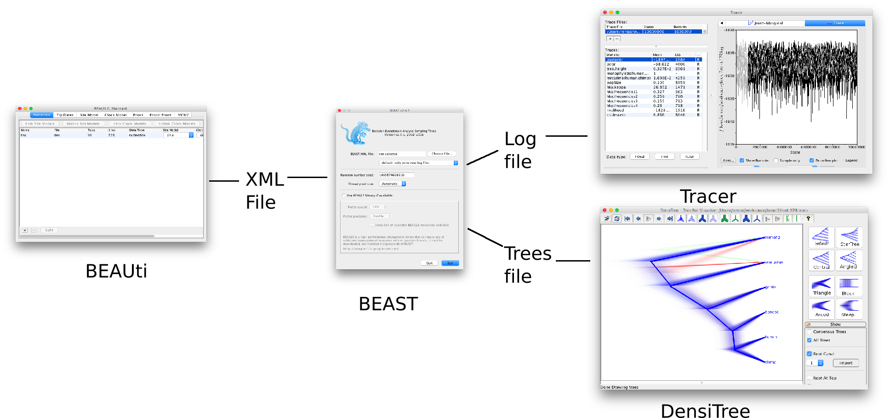
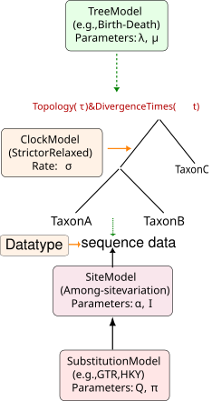
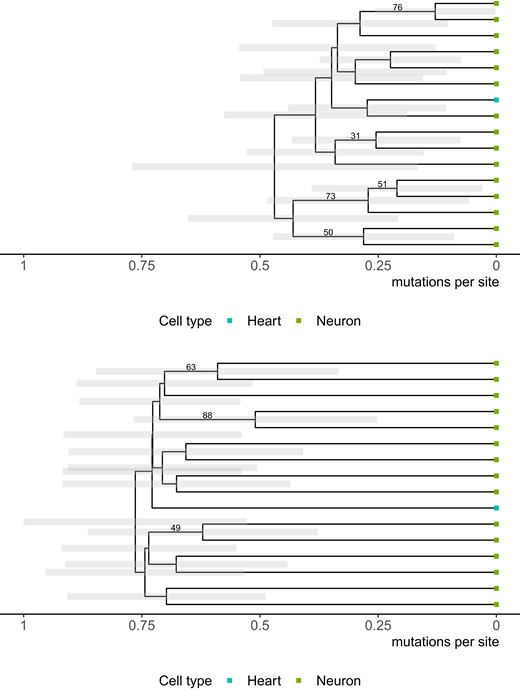
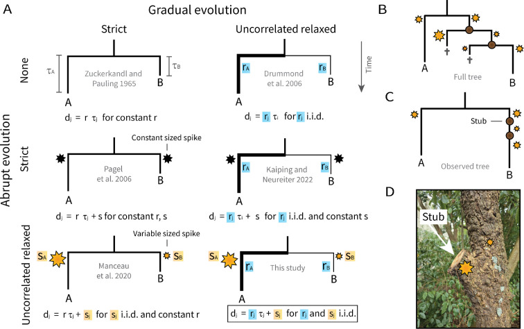
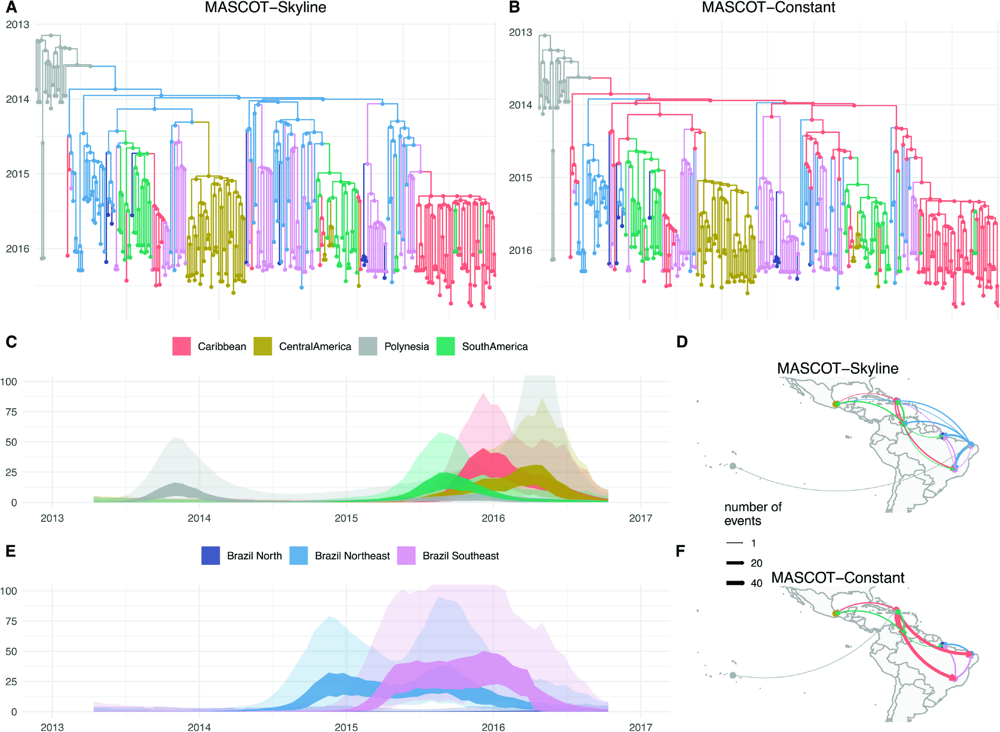
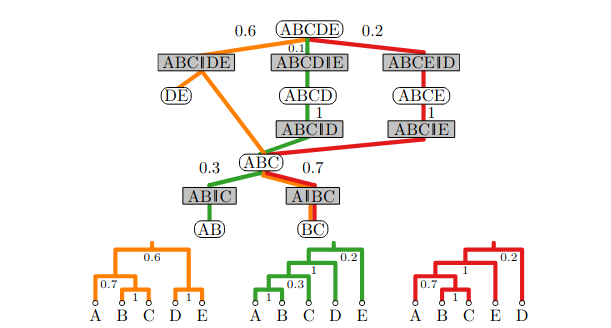
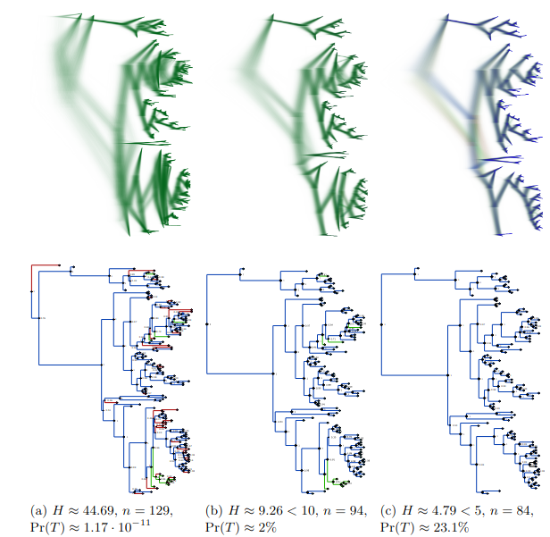

What is new in BEAST v2.8
Aug 2026
Remco Bouckaert
What is BEAST?
BEAST = Bayesian Evolutionary Analysis Sampling Trees
BEAST = set of programs for Bayesian phylogenetic analysis
Build for extension: about 90 packages

Bayesian implies: 1. everything is a distribution 2. model based
Selection of New Models
- New Data types
- 3Di
- Single cell sequencing (various)
- New Site models
- New Substitution models
- Structural evolution
- Single cell sequencing
- Morphological models
- New Clock models
- Spike model
- Clock mixture model
- New Tree models
- MASCOT skyline (structured coalescent)
- Multi species coalescent (species delimitation)
- ContacTrees (language data with borrowing)
|
 |
New Substitution models
|

|
Single cell sequence data
With and without error model
|
Chen et al. MBE. 2022 Aug 1;39(8):msac143.
New Clock models: spike model

Douglas et al. Proc Roy Soc B. 2025;292(2047):20250182.
New Tree models: MASCOT skyline

Müller et al. PLoS Comp Bio. 2025;21(9):e1013421.
Improvements in computational efficiency
- New MCMC operators
- Bactrian
- Adaptable
- Targeted
- Parallel (sb3)
- New methods of inference
- Adaptable Coupled MCMC
- Variational Bayes -- cube space
- Online analysis
New Post Processing Tools
- Tree file analysis
- TreeAnnotator (CCD0)
- Clade set counting
- ...
- Tree file manipulation
- Removing taxa
- File format conversion
- ...
- Model specific tools
- OBAMAAnalyser
- YuleSkylineLogProducer
- ClusterTreeSetAnalyser -- species delimitation
- ...
- Misc
- DocMaker/FeastQuery for navigating BEAST functionality
- PackageHealthChecker
- ...
Tractable tree distributions
Conditional Clade Distribution (CCD)

Enables: Entropy calculation, Compare tree sets, Summary tree (CCD0), Rogue detection, Hypothesis testing, Improve inference, Skeleton analysis, ...
Klawitter et al. bioRxiv. 2024 Sep 27:2024-09.
Skeleton analysis (CCD)

New Developments for Developers
- Strong typing
- Prevents building of invalid models
- More flexible mixing and matching of models
- BEAUti can show more sensible priors
- Enables PhyloSpec support
- Java Platform Module System (JPMS) + Maven
- Enabling AI assisted development
- Developer support
- Simulators LinguaPhylo, ReMASTER
- Tools to assist in well calibrated simulation studies
Conclusions BEAST v2.8
- Ever growning collection of models
- Ongoing development focussed on new methods/efficiency
- Provides modern environment for package developers
- Well supported eco system for training
Credits: all BEAST2 developers
Preprint: R.Bouckaert et al. BEAST: a State-of-the-art Software Platform for Bayesian Evolutionary Analysis. In preparation. 2026